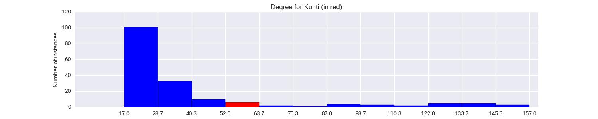

Quantiative Wayang Dictionary
Kunti
Terms of address: Dewi
Type: Human
Origin: India
Notes on the Sanskrit version: She is known as the adopted daughter of Kuntibhoja. Her biological father is Surasena. She is known as the mother of the Pandavas and of Karna, whom she had with the Sun God before she married Pandhu.
Alternative names: Prita, Kuntinalibrata
Description in the Javanese version: The biological daughter of Surasena, but taken in by Kuntiboja. She is the mother of Karna (who she has with Surya out of wedlock), and of the oldest three Pandawa. Although Puntadewa, Werkudara and Arjuna are acknowledged as her sons with Pandu, in reality their fathers are the gods [Darma], Bayu and Indra, respectively. According to the Indian version, she died fifteen years after the end of the Mahabharata, in a fire in the forest together with Drestarastra and Gendari, but there are alternative versions of her death. She was once coveted by Sengkuni, who later assaulted her and tried to strip her naked. She vowed to one day wear clothes made of his skin. She was able to accomplish this during the Baratayuda war, when Sengkuni was killed by Werkudara, who skinned him live. Part of the skin was trapped in Werkudara's nail, and he gave it to Kunti.
Found in the follwing lakon (stories):
Family relationships
Father: Surasena
Consorts: Surya, Darma, Bayu, Indra
Offspring: Karna, Puntadewa, Werkudara, Arjuna
More information
Aji / Wahyu / Pusaka: Aji Adityaherdaya
Wanda: Rangkung
Sources: Ensiklopedi Wayang Purwa, pp. 308-311; Mengenal Gambar Tokoh Wayang Purwa, p. 154; Ensiklopedi Wayang Indonesia, pp. 380-190 (Vol. V); Rupa dan Karakter Wayang Purwa, pp. 380-381
Network measurements for Kunti
| Measurement | Value | |
|---|---|---|
| Degree | 60.0 |  |
| Weighted Degree | 136.0 |  |
| Closeness Centrality | 0.604166666667 |  |
| Betweeness Centrality | 98.0037926837 |  |
| Eigenvector Centrality | 0.461822175188 |  |
{kind=link}
Characters in the same adegan as Kunti
| Character | Link weight |
|---|---|
| Character | Link weight |